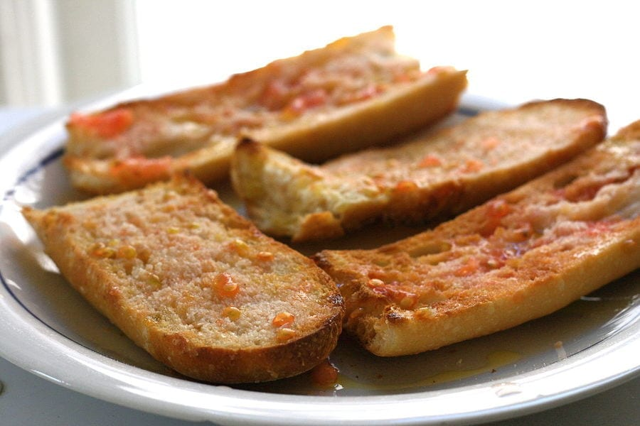
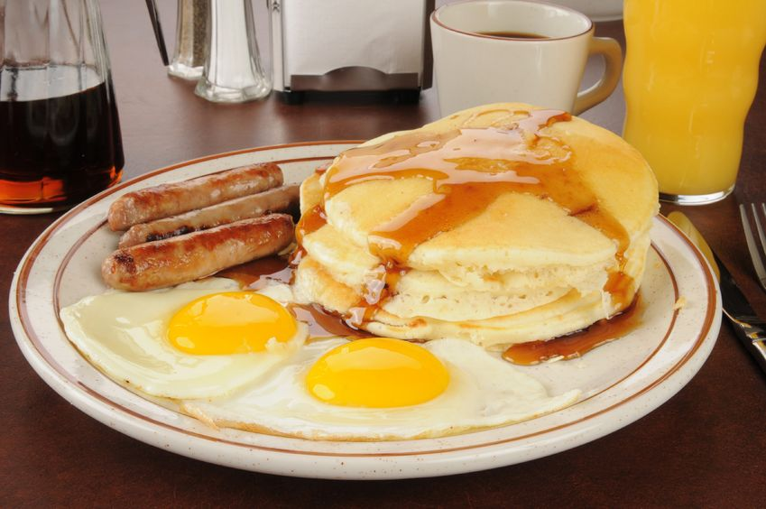

Spagna
In Spagna si mangia il Pan a la Catalana: fette di pane strofinate con aglio fresco e spalmate di salsa di pomodoro, sale e un filo d’olio.
Corea
In Corea la colazione tradizionale è a base di kimchi, piatto di verdure fermentate, riso e zuppa di verdure.

Alaska
In Alaska la tipica colazione è composta da salsicce di renna con uova all’occhio di bue e pancakes.

Stati Uniti
La colazione americana comprende pancakes lievitati con sciroppo di acero con mirtilli qua e le fettine di bacon fritto.